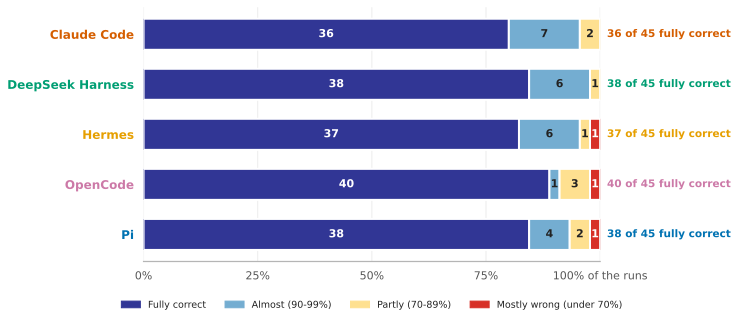
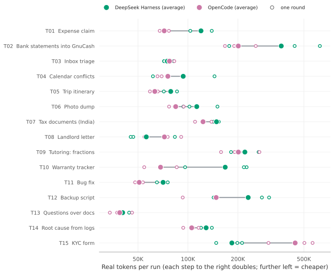
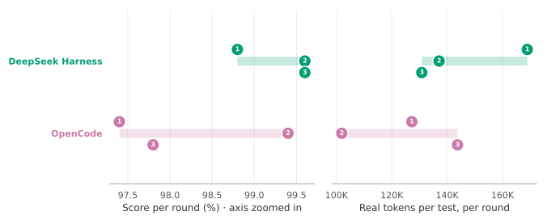
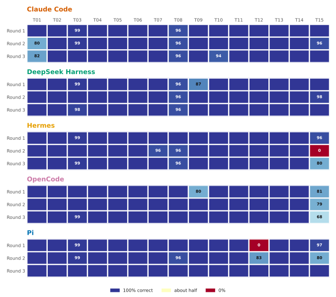

qwen3.8-flash-next: xhigh reasoning effort
DeepSeek Harness and OpenCode were each given the same 15 tasks, three times each, with the model asked for xhigh (the server's default) reasoning effort. Every graph below shows every run, not averages hiding the differences between rounds.
On this page: Headline · Correctness · Cost · Round by round · Test by test · Rotate it
Headline
DeepSeek Harness
OpenCode
The average score includes partial credit, so it shows how close the work was, not how often it could be relied on: use "runs fully correct" for that. More on the Summary page. Real tokens are the new text the model read plus everything it wrote; what that means.
How correct were the runs?
Each bar is all of a harness's counted runs, split by how correct they were. The more dark blue, the more runs were fully correct. The number in each block is how many runs fell in it.

What did each test cost?
One row per test. Small hollow dots are the three rounds; the large dot is the harness's average for that test, and the grey line joins the harnesses so the gap is easy to see. Further left means fewer real tokens, so cheaper. The scale is not evenly spaced: each step to the right doubles the tokens, so 50K to 100K takes the same distance as 100K to 200K. That keeps cheap and expensive tests readable on one graph, but a gap on the right is a bigger difference in tokens than the same gap on the left.

Did it do the same each round?
Each numbered dot is one round (1, 2, 3) of all 15 tests. A short bar means the harness did about the same every round; a long bar means its results moved around.

Which tests went wrong, and when?
One cell per run: 15 tests across, three rounds down. Blue is fully correct and red is a failure; the number shows the score when it was below 100%. Failures that move between rounds show up as red cells in different columns.

T01 Expense claim · T02 Bank statements into GnuCash · T03 Inbox triage · T04 Calendar conflicts · T05 Trip itinerary · T06 Photo dump · T07 Tax documents (India) · T08 Landlord letter · T09 Tutoring: fractions · T10 Warranty tracker · T11 Bug fix · T12 Backup script · T13 Questions over docs · T14 Root cause from logs · T15 KYC form
Rotate it: score, cost and time together
Drag to rotate, scroll to zoom, hover a dot for its test and round, click a name in the legend to hide or show a harness. Axes: real tokens (log scale), score, and minutes.